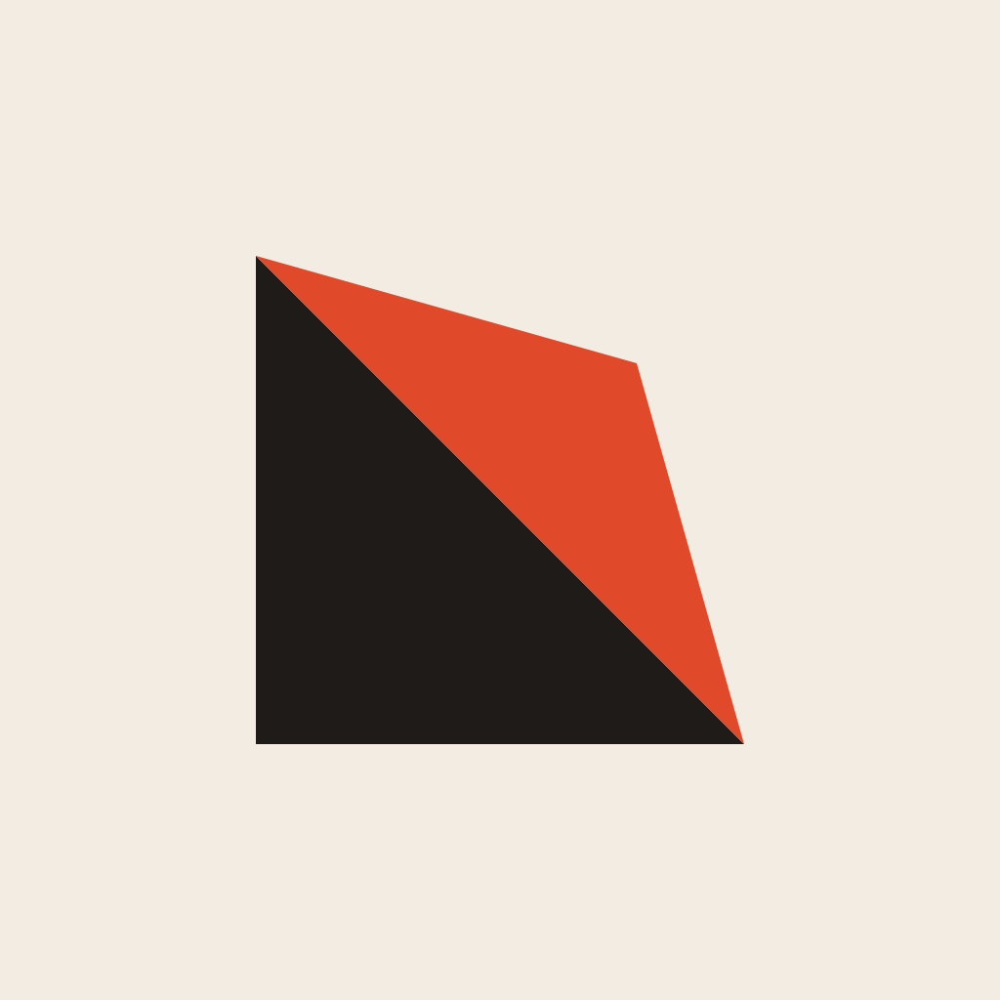
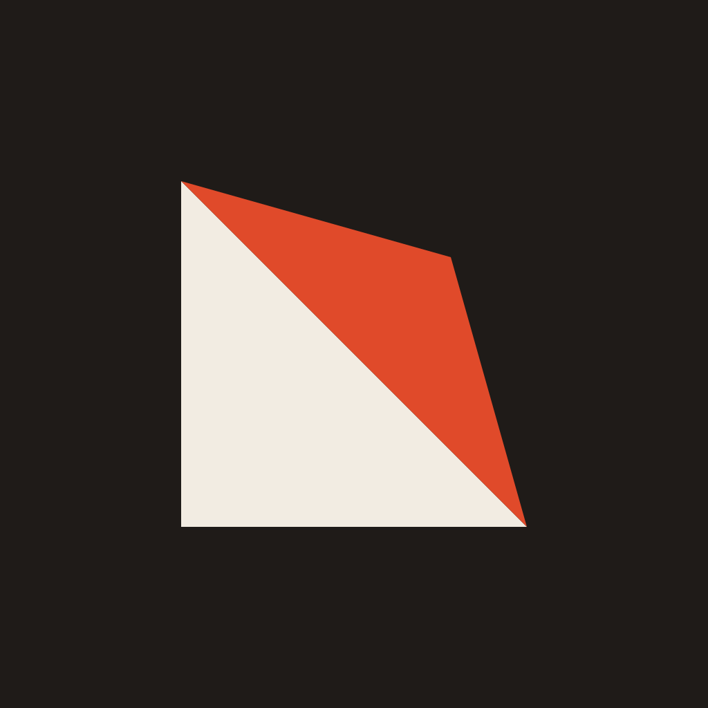
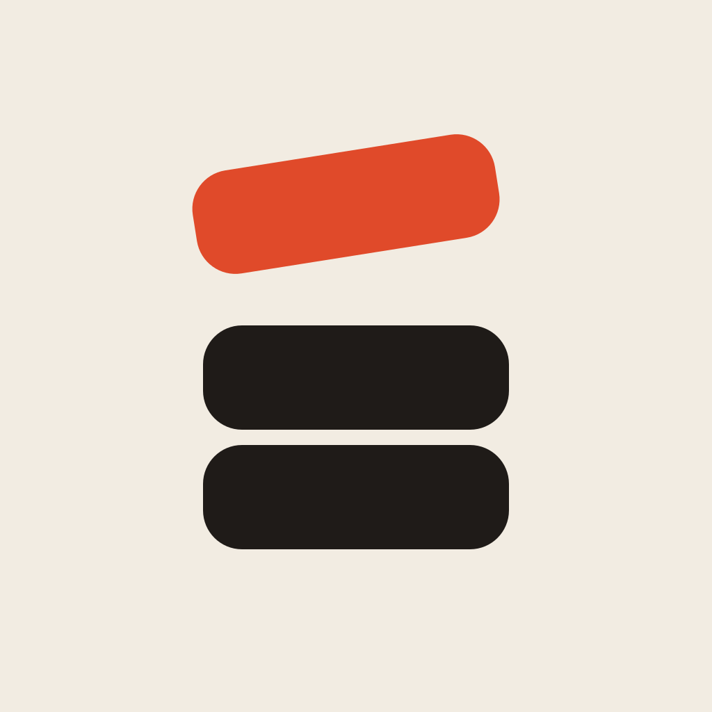
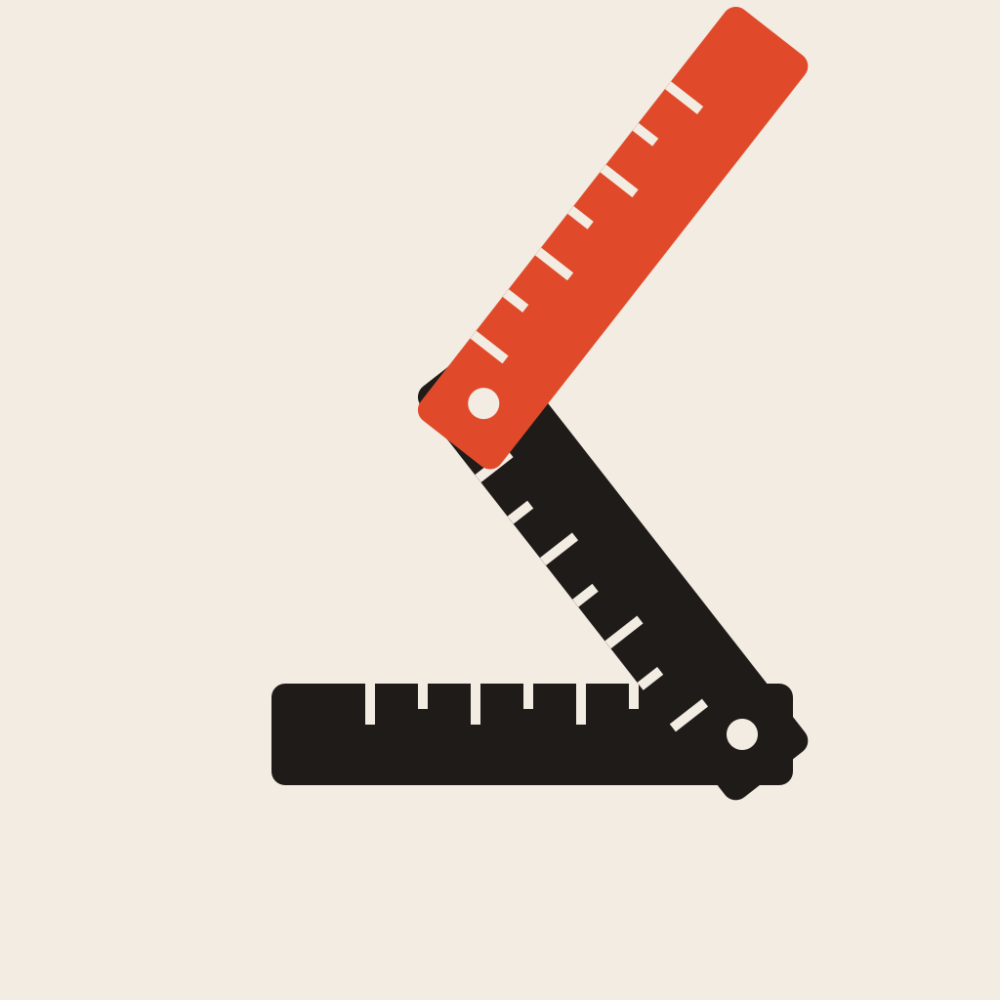
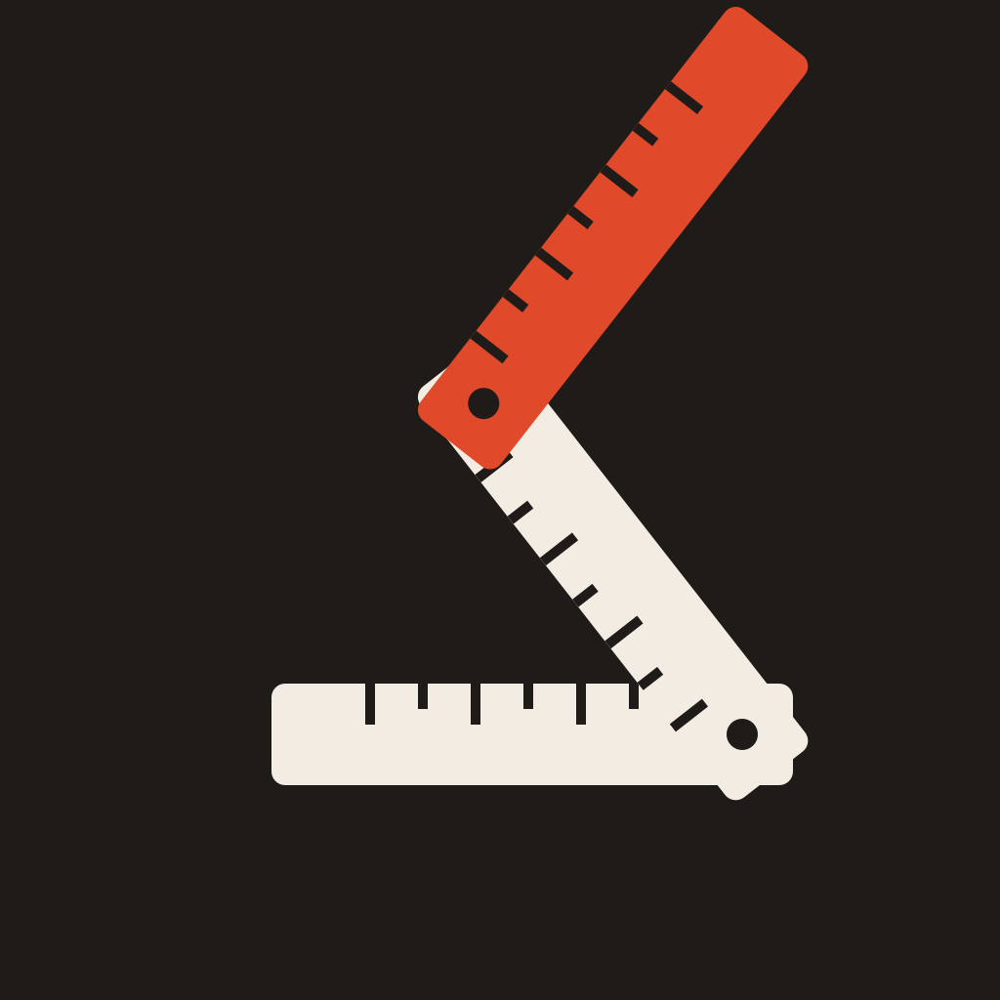
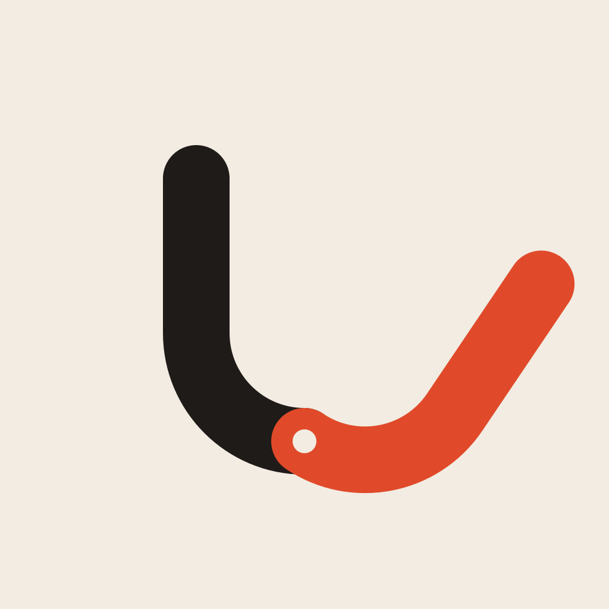
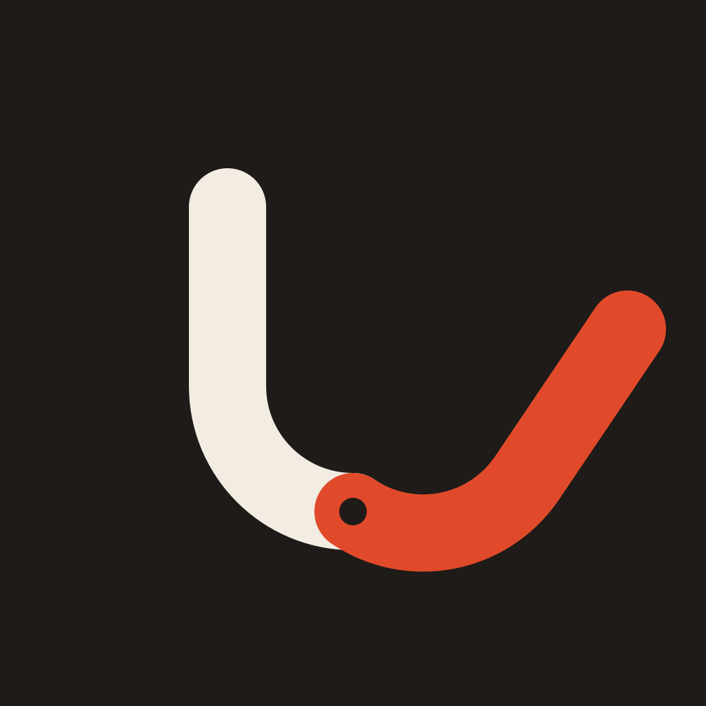

Five marks drawn from the idea of unfolding itself, not from any theme. Two colourways each: paper and ink, with one vermilion part that does the opening. Shown at 1024, 64, 32 and 16 px.


A square sheet opening along its diagonal; the vermilion flap is the back of the paper, half swung open.

Three vertebral blocks, the top one lifting and tilting open: room being made between them. The quiet rehab reading; no medical cross, no figure.
An accordion fold opening out; ink and vermilion are the front and back of the paper, each pleat wider and flatter than the last. Reads as motion even when still.


A carpenter’s folding rule, half extended: something that measures by unfolding. Ties to the timer without a clock face.


The letter u with its right arm swung open on the base. The name is the mark; strongest as a monogram.